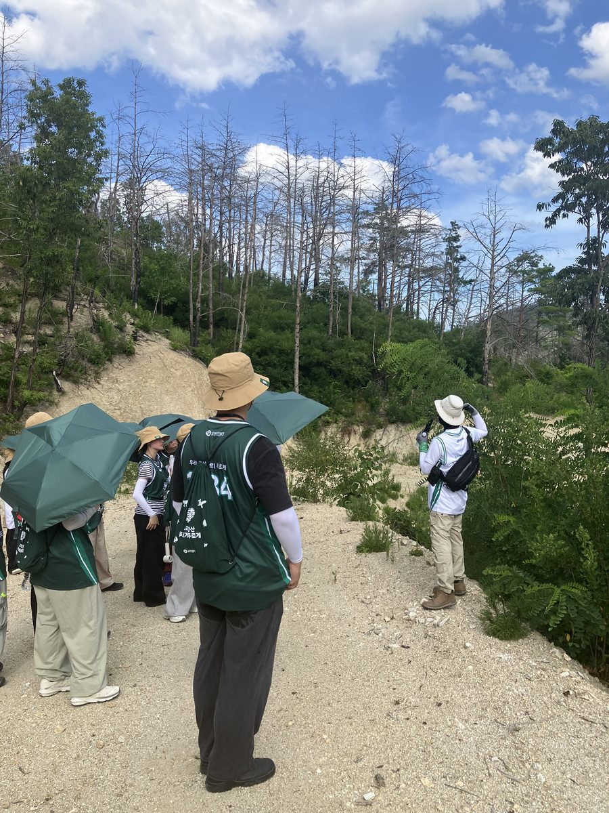
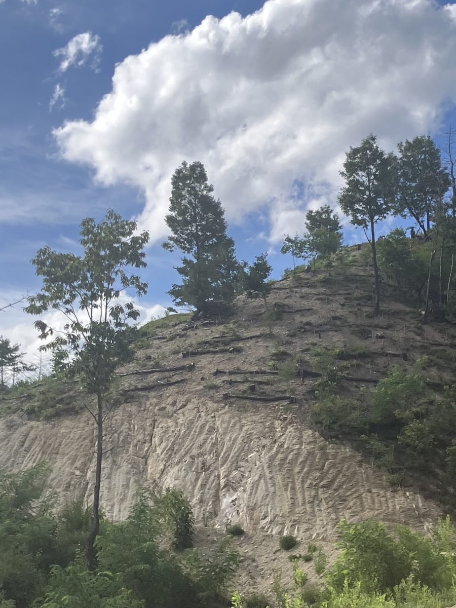
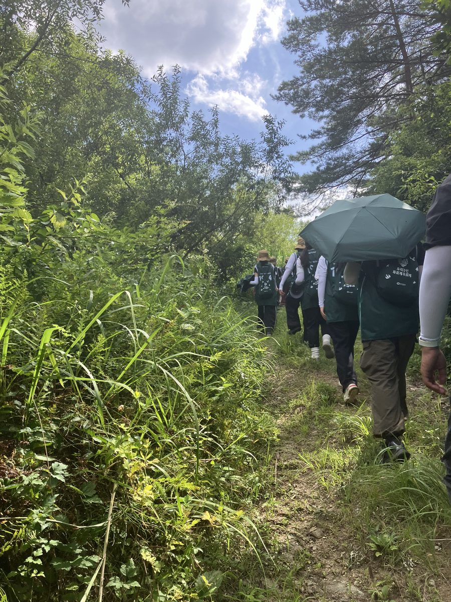

그리고, 우리가 다녀온 곳
이 이야기는 상상이 아닙니다.
우리는 실제로 그 땅에 다녀왔습니다.



2026 그린캠프 · 안동, 울진 산불 피해지
한여름, 그늘 하나 없는 산을 걸었습니다.
나무가 사라진 자리에는 그늘도 함께 사라져 있었습니다.
복원에는 생각보다 훨씬
많은 시간과 노력이 필요했습니다.
산불은 1초, 복원은 한 세대.
도심 속 서울숲에서, 사라진 숲을 만나보세요.
숲 하나가 사라지면,
이렇게 많은 것이 함께 사라집니다.
그래서 복원이 필요합니다.
현장의 조건에 따라 자연복원과 인공복원 중 무엇이 선택되었는지 — 실제 사례로 확인해 보세요.
복원 방법에 하나의 정답은 없습니다.
그러나 그 땅에 묻지 않고 내린 결정은 오답입니다.
화면을 부스 스태프에게 보여주시면 씨앗 키트를 드립니다.
“이제 당신의 책상 위에서, 작은 복원을 시작해 주세요.”



2026 그린캠프 · 안동, 울진 산불 피해지
한여름, 그늘 하나 없는 산을 걸었습니다.
나무가 사라진 자리에는 그늘도 함께 사라져 있었습니다.
복원에는 생각보다 훨씬
많은 시간과 노력이 필요했습니다.
유한킴벌리 · 우리강산 푸르게 푸르게 · 2026 그린캠프